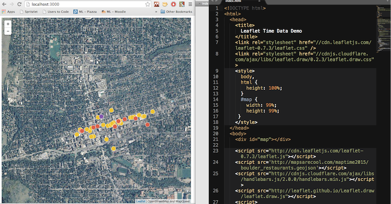
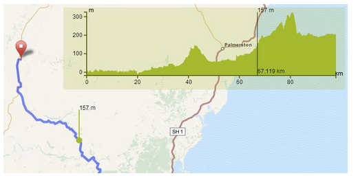
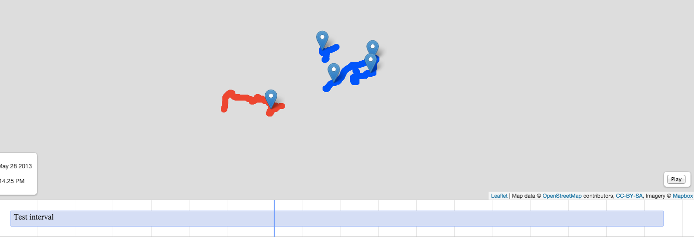
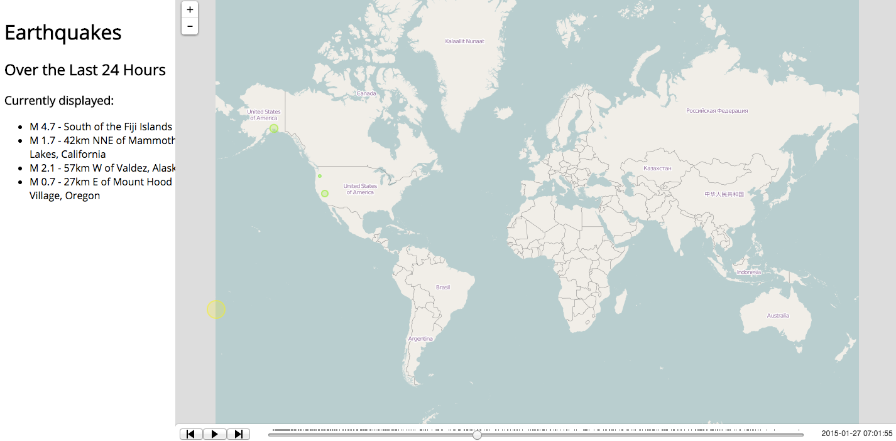

Maptime Boulder!
Leaflet Part II: Time Data
Created by Jennings Anderson
Slides available here:
http://bit.ly/1H8BxAsLast Time
Last time we built a simple webpage with an embedded leaflet map.

This Time
Tonight we will build from that map by adding other Leaflet plugins:
Time Slider
Elevation Models
Any Plugin You Want!
Setting Up
Here is a template directory with the necessary files & sample data
It is nearly identical to the final product from last time, but there is some additional sample data and some ugly dependencies are saved locally
http://bit.ly/15QC0H9Download & Unzip
Open index.html in both a browser and your favorite text editor.
Part I: Lets get some new data
Recall GeoJSON:
var tweets = {
"type": "FeatureCollection",
"features": [
{
"type": "Feature",
"properties": {
"time": "2012-10-28T18:02:01-06:00",
"text": "Off to check out the beach #sandy #hightide"
},
"geometry": {
"type": "Point",
"coordinates": [
-74.20258736,
40.04910362
]
}
}
]
}
Add a datasource
<script src="http://s.townsendjennings.com/leaflet-time-sample.js"></script>
It's useful to keep all these together:
<script src="http://cdn.leafletjs.com/leaflet-0.7.3/leaflet.js"></script>
<script src="http://cdnjs.cloudflare.com/ajax/libs/handlebars.js/2.0.0/handlebars.min.js"></script>
<script src="http://s.townsendjennings.com/leaflet-time-sample.js"></script>
Note, this needn't be copied, this is just a reference
In the code:
Now we have a new variable available in our script: tweets
L.geoJson(tweets, {
onEachFeature: function (feature, layer) {
console.log(feature)
}
}
Add it to the map:
In your script, add the following:
L.geoJson(tweets, {
onEachFeature: function(feature, layer){
layer.bindPopup(feature.properties.text);
}
}).addTo(map);
Note: this is the default rendering, using a tool such as last time's mustache.js gives a lot of control over this appearance
Part II: Using the data's attributes
Since each feature has a TIME element, we can use that for further logic to make our map interactive.
var tweets = {
"type": "FeatureCollection",
"features": [
{
"type": "Feature",
"properties": {
"time": "2012-10-28T18:02:01-06:00",
"text": "Off to check out the beach #sandy #hightide"
},
"geometry": {
"type": "Point",
"coordinates": [
-74.20258736,
40.04910362
]
}
}
]
}
First: Add the Time Slider plugin
These dependencies have been preloaded for the sample:
Create the slider and initialize
In your script, add the following lines
var sliderControl = L.control.sliderControl(
{position: "topright", layer: tweetLayer});
map.addControl(sliderControl);
sliderControl.startSlider();
Customizing
The following variations are available:
{position: "topright", layer: tweetLayer, range: true}
{position: "topright", layer: tweetLayer, follow: 3}
More information available in the Documentation
Part III: New Plugins
Here are some other available plugins which are included in this sample project, just need to be implemented:
Elevation Models
More Precise Time Control
Yet another time control
Datasets
There are millions of data sets out there to play with, I've collected a few, but you probably have others you're working with, so lets try to play with those?
More Datasets Below:
Alternative Fuels
Earthquakes
NYC Taxis
Thanks!
Now let's play with some maps!